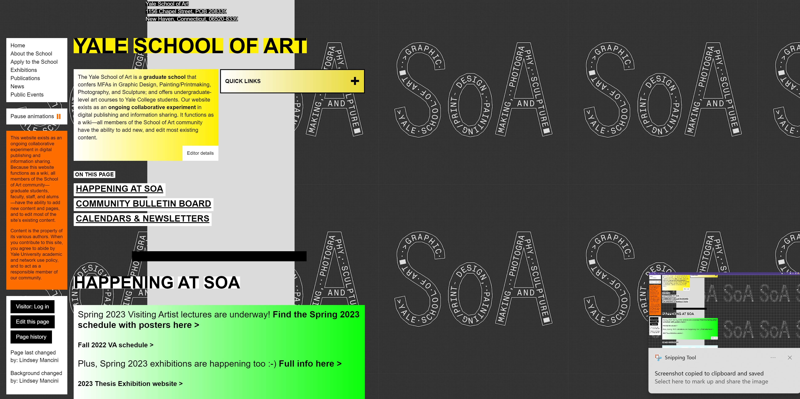
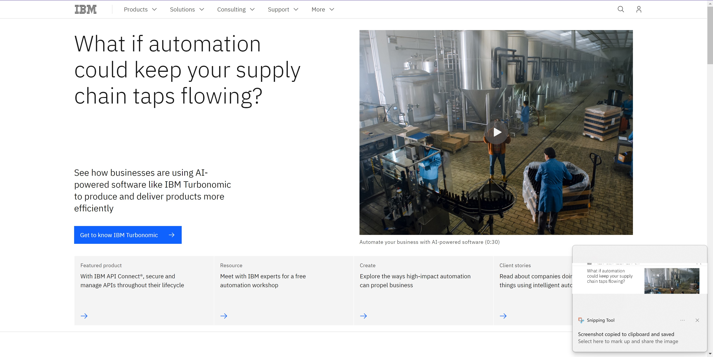

Website Evaluations
Yale School of Art
This is the official website for the Yale University's School of Art. Yes THE Yale University. This school encomapsses all of the arts that Yale wishes to showcase including painting, photography, graphic design and more. The school also boasts having this website serve as a wikipedia for the school of art, allowing all students and staff to have edit and adding content access.
The following is a CRAP critique of the Yale art school's website:
- Contrast- While the website would seemingly at first glance look like it fails all the principles of CRAP design, I noticed that it applied a good amount of contrast and doesn't strain the eyes when it comes to the website allowing for good readability.
- Repitition- When it comes to repitition the website maintains terrible consistency and shows no uniformity at all, text boxes are different sizes and colors, the fonts differ from paragraph to paragraph when it comes to size, weight, and style. Overall, a terrible consistency and makes the website feel chaotic.
- Alignment- Similar to the repitition blurb alignment suffers from the lack of consistency from the page. Text boxes don't follow anyt specific alignment and help each other look out of alignment seemingly purposefully. The lack of alignment helps maintain the chaotic theme growing within this webpage.
- Proximity- When it comes to proximity seemingly at first glance this website should pass the test since all items remain near each other and don't wander to far off, however this is the exact problem. Because of the cramped design of the page elements that aren't related to each other end up next to each other leading to confusion and not following the proximity principle correctly.
Rating: Overall the Yale School of Arts webpage recieves an "F" when it comes to CRAP design principles and gets two thumbs down as a website.
IBM
The following webpages is the online presence of the giant tech company known as IBM. The IBM website shows an array of projects that IBM has gotten themselves involved in as well as plenty of finished products that they are more than proud to show the viewer.
The following is a CRAP critique of IBM's website:
- Contrast- The constrast on this website is excellent, although they use the plain colors of just white and black there's a reason they are the common answer. The contrast allows everything to be readable and creates no eye strain what-so-ever.
- Repition- The website creates excellent uses of repitition in order to create a professional feel to communicate the elegance of IBM. The standard image size and repeat border size of content boxes creates an excellent feeling website.
- Alignment-The alignment of this website it excellent and consistent throughout the webpage. The left side of the page is used as a table of context and allows you to determine what you are reading and why. While the right half flows beautifully with all content blocks aligning both horizontally and vertically.
- Proximity- The proximity of the site allows for relevant content to be easily determined with a mere glance. The excellent use of white-space, headings, and proximity allows for where content belongs to never be mistaken.
Rating: Overall the IBM website practices CRAP design principles to a tee and allows for this website to feel professionally made and instills confidence in the consumer that they made the right choice choosing IBM. Three thumbs up.